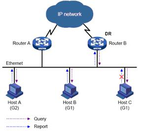

组播–IGMPv2
目录
IGMP 是 Internet Group Management Protocol（互联网组管理协议）的简称。它是 TCP/IP 协议族中负责 IP 组播成员管理的协议，用来在 IP 主机和与其直接相邻的组播路由器之间建立、维护组播组成员关系。
- IGMPv1（由 RFC 1112 定义）
- IGMPv2（由 RFC 2236 定义）
- IGMPv3（由 RFC 3376 定义）
所有版本的 IGMP 都支持 ASM（Any-Source Multicast，任意信源组播）模型；IGMPv3 可以直接应用于 SSM（Source-Specific Multicast，指定信源组播）模型，而 IGMPv1 和 IGMPv2 则需要在 IGMP SSM Mapping 技术的支持下才能应用于 SSM 模型。
IGMP 工作原理
- 第一阶段：当某个主机加入新的组播时，该主机应向多播租的多播地址发送一个 IGMP 报文，声明自己要成为该租的成员。本地的多播路由器收到 IGMP 报文后，还要利用多播路由选择协议把这种组成员关系转发给因特网上的其他多播路由器。
- 第二阶段：组成员关系是动态的。本地多播路由器要周期性地探询本地局域网上的主机，以便知道这些主机是否还继续是组成员。只要有一个主机对某个组响应，那么多播路由器就认为这个组是活跃的。但一个组在经过几次的探询后仍然没有一个主机响应，多播路由器就认为本网络上的主机已经都离开了这个组，因此也就不再把这个组的成员关系转发给其他的多播路由器。
特性
IGMP snooping 和 IGMP proxy
IGMP snooping
是运行在二层设备上的组播约束的机制，用于管理和控制组播组。
IGMP proxy
是靠拦截用户和路由器之间的 IGMP 报文建立组播表，Proxy 设备的上联端口执行主机的角色，下联端口执行路由器的角色。
IGMPv1
IGMPv1 主要基于查询和响应机制来完成对组播组成员的管理。
当一个网段内有多台组播路由器时，由于它们都能从主机那里收到 IGMP 成员关系报告报文（Membership Report Message），因此只需要其中一台路由器发送 IGMP 查询报文（Query Message）就足够了。这就需要有一个查询器（Querier）的选举机制来确定由哪台路由器作为 IGMP 查询器。
对于 IGMPv1 来说，由组播路由协议（如 PIM）选举出唯一的组播信息转发者 DR（Designated Router，指定路由器）作为 IGMP 查询器

图1 igmpv1
IGMPv1 没有专门定义=离开组播组=的报文。当运行 IGMPv1 的主机离开某组播组时，将不会向其要离开的组播组发送报告报文。当网段中不再存在该组播组的成员后，IGMP 路由器将收不到任何发往该组播组的报告报文，于是 IGMP 路由器在一段时间之后便删>除该组播组所对应的组播转发项。
IGMPv2
与 IGMPv1 相比，IGMPv2 增加了 查询器选举机制 和 离开组机制 。
查询器选举机制
在 IGMPv1 中，当某共享网段上存在多个组播路由器时，由组播路由协议（如 PIM）选举的指定路由器充当查询器。
在 IGMPv2 中，增加了独立的查询器选举机制，其选举过程如下：
- 所有 IGMPv2 路由器在初始时都认为自己是查询器，并向本地网段内的所有主机和路由器发送 IGMP 普遍组查询（General Query）报文（目的地址为 224.0.0.1）；
- 本地网段中的其它 IGMPv2 路由器在收到该报文后，将报文的源 IP 地址与自己的接口地址作比较。通过比较， IP 地址最小的路由器将成为查询器，其它路由器成为非查询器（Non-Querier）；
- 所有非查询器上都会启动一个定时器（即其它查询器存在时间定时器 Other Querier Present Timer）。在该定时器超时前，如果收到了来自查询器的 IGMP 查询报文，则重置该定时器；否则，就认为原查询器失效，并发起新的查询器选举过程。
离开组机制
在 IGMPv1 中，主机离开组播组时不会向组播路由器发出任何通知，导致组播路由器只能依靠组播组成员查询的响应超时来获知组播组成员的离开。
而在 IGMPv2 中，当一个主机离开某组播组时：
- 该主机向本地网段内的所有组播路由器（目的地址为 224.0.0.2）发送离开组（Leave Group）报文；
- 当查询器收到该报文后， 向该主机所声明要离开的那个组播组发送特定组查询（Group-Specific Query）报文（目的地址字段和组地址字段均填充为所要查询的组播组地址）；
- 如果该网段内还有该组播组的其它成员，则这些成员在收到特定组查询报文后，会在该报文中所设定的最大响应时间（Max Response Time）内发送成员关系报告报文；
- 如果在最大响应时间内收到了该组播组其它成员发送的成员关系报告报文，查询器就会继续维护该组播组的成员关系；否则，查询器将认为该网段内已无该组播组的成员，于是不再维护这个组播组的成员关系。
IGMPv2 报文格式
0 7 8 1516 31
+--------------+---------------+-------------------------------+-++
| Type | max_resp_time | CheckSum | |
+--------------+---------------+-------------------------------+ 8Byte
| Group Address | |
+--------------------------------------------------------------+-++
Type：
| Type | |
|---|---|
| 0x11 | Membership Query(成员查询) |
| 0x12 | Version 1 Membership Report(版本 1 成员报告) |
| 0x16 | Version 2 Membership Report(版本 2 成员报告) |
| 0x17 | Leave Group(离开组) |
max_resp_time：在发出响应报告前的以 1/10 秒为单位的最长时间，缺省值为10秒。新的最大响应时间（以 1/10 秒为单位）字段允许查询用路由器为它的查询报文指定准确的查询间隔响应时间。IGMP 版本 2 主机在随机选择它们的应时间值时以此作为上限。
从路由器接收到一条查询消息后，主机会为其所属的每个组播组都配置一个计时器。计时器的值在 0 到最大响应时间之间随机选定。当其中任何一个计时器的值减为 0 时，主机就会发送该组播组的成员报告消息。合理配置最大响应时间，可以使主机快速响应查询信息，路由器也就能快速地掌握组播组成员的存在状况。
Group Address: 组地址
Internet Group Management Protocol
[IGMP Version: 2]
Type: Membership Report (0x16)
Max Resp Time: 0.0 sec (0x00)
Checksum: 0xfaf3 [correct]
[Checksum Status: Good]
Multicast Address: 239.0.0.11
设置 max\_resp\_time
ip igmp snooping query-max-response-time seconds
IGMPv3
IGMPv3 在兼容和继承 IGMPv1 和 IGMPv2 的基础上，进一步增强了主机的控制能力，并增强了查询和报告报文的功能。
IGMP snooping 查询器
在运行了 IGMP 的组播网络中，会有一台三层组播设备充当 IGMP 查询器，负责发送=IGMP 查询报文=，使三层组播设备能够在网络层=建立并维护组播转发表项，从而在网络层正常转发组播数据=。